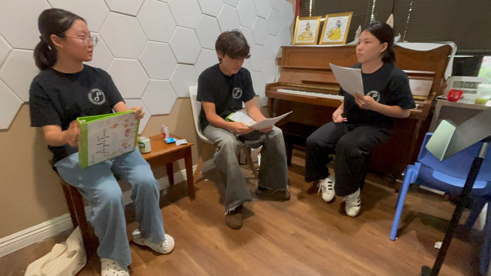
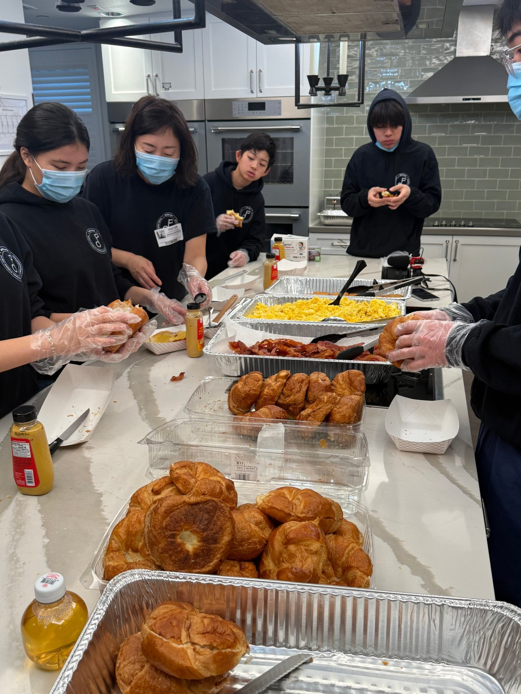
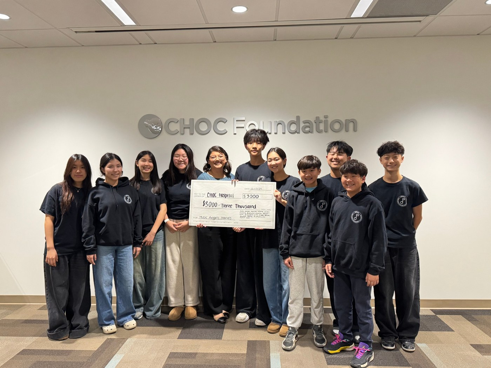

Co-President
Helps plan programs, coordinate members, organize activities, and follow through on ideas from start to finish.
I’ve learned that leadership often starts with listening. From there, it means taking responsibility, bringing people together, and following through on what needs to be done.



Helps plan programs, coordinate members, organize activities, and follow through on ideas from start to finish.
Founded the organization’s monthly newspaper and led the publication of 25+ issues since October 2023. Select a page to view full size.